Experiments
This page includes every Chris-tastic World experiment poster, plus supplies needed, quick how-to steps, and an easy-to-hard difficulty meter shown with blocks on each experiment.
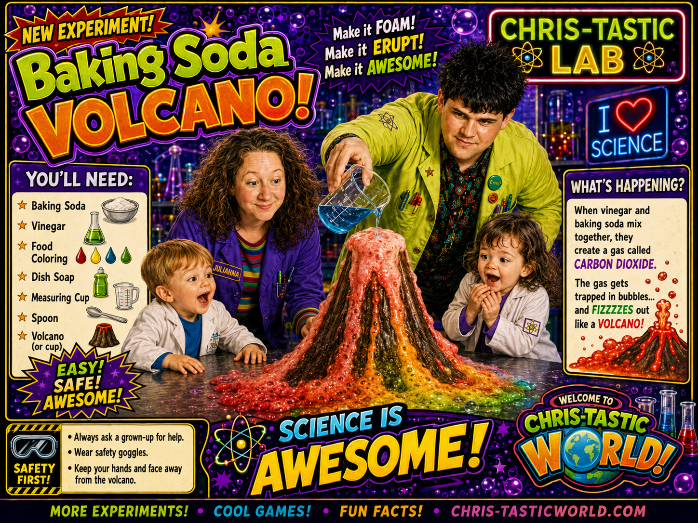
Baking Soda Volcano
Create a foamy eruption and talk about acid-base reactions.
Supplies: Baking soda • Vinegar • Dish soap • Cup or volcano model
- Place baking soda in a cup or volcano container.
- Add a little dish soap if desired.
- Pour in vinegar and watch the fizzy eruption.
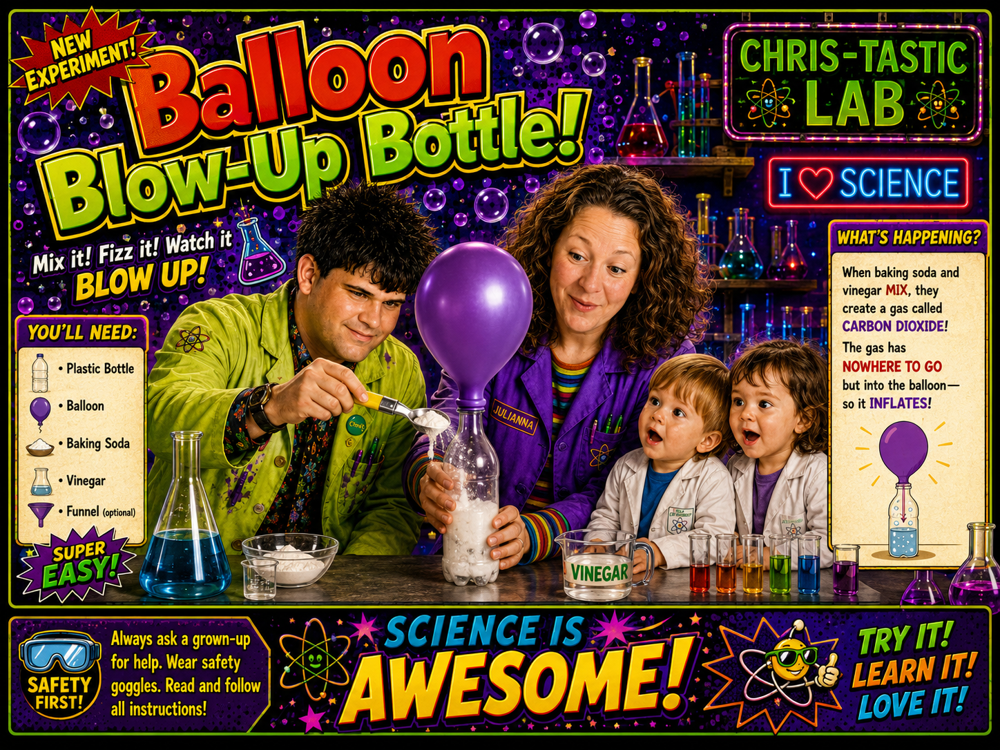
Balloon Blow-Up Bottle
Use a simple reaction to inflate a balloon without blowing into it.
Supplies: Bottle • Balloon • Baking soda • Vinegar
- Pour vinegar into a bottle.
- Put baking soda into a balloon and attach it to the bottle.
- Lift the balloon so the baking soda drops in and watch it inflate.
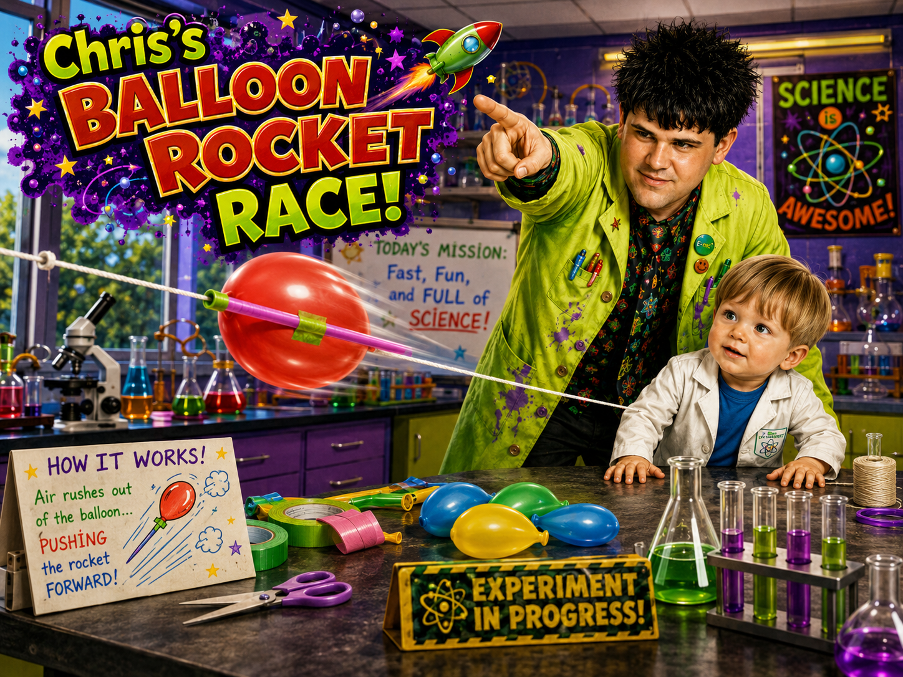
Chris's Balloon Rocket Race
Launch a balloon down a string track and learn how air pressure creates thrust.
Supplies: Balloon • String • Tape • Straw
- Thread the string through a straw and pull the string tight between two points.
- Tape an inflated balloon to the straw without tying the end.
- Let go and watch the balloon rocket race across the string.
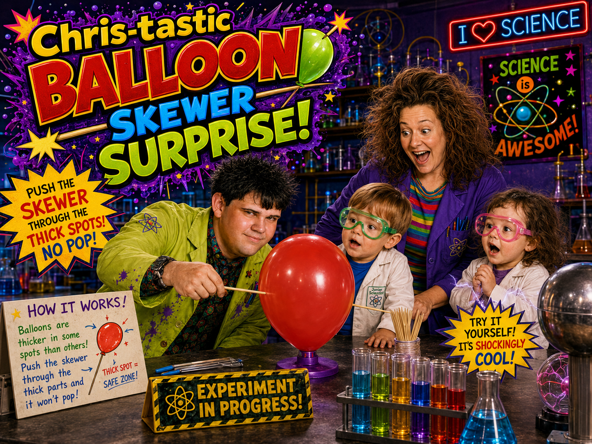
Balloon Skewer Surprise
Push a skewer through the thick spots of a balloon without popping it.
Supplies: Balloon • Wooden skewer • A little oil optional
- Inflate a balloon and tie it off.
- Carefully push a skewer through the thicker latex near the knot and top.
- Watch the balloon stay inflated when the skewer passes through the thick spots.
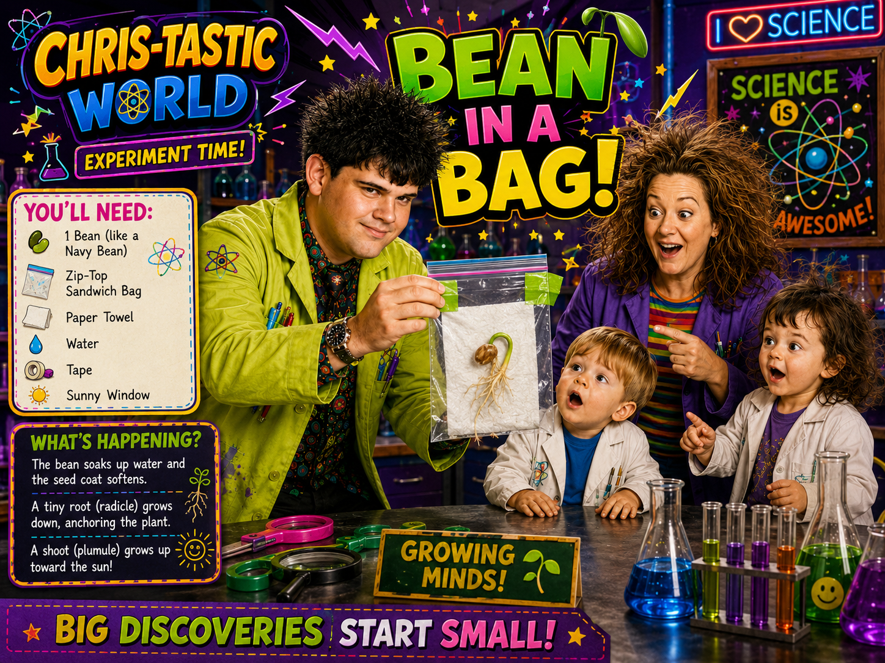
Bean in a Bag
Watch a seed sprout where everyone can see the roots and stem grow.
Supplies: Bean seed • Damp paper towel • Zip bag • Tape
- Wet a paper towel and place it in a zip bag.
- Add a bean seed between the towel and the bag side.
- Tape it to a window and watch the bean sprout.
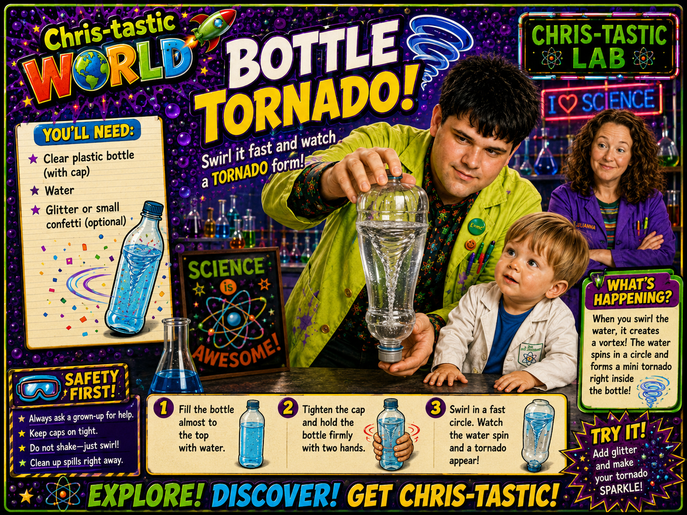
Bottle Tornado
Spin water inside a bottle and create a swirling mini tornado.
Supplies: Clear bottle • Water • Optional glitter
- Fill a clear bottle partway with water.
- Add glitter if desired and cap it.
- Swirl the bottle in a circle to form a tornado funnel.
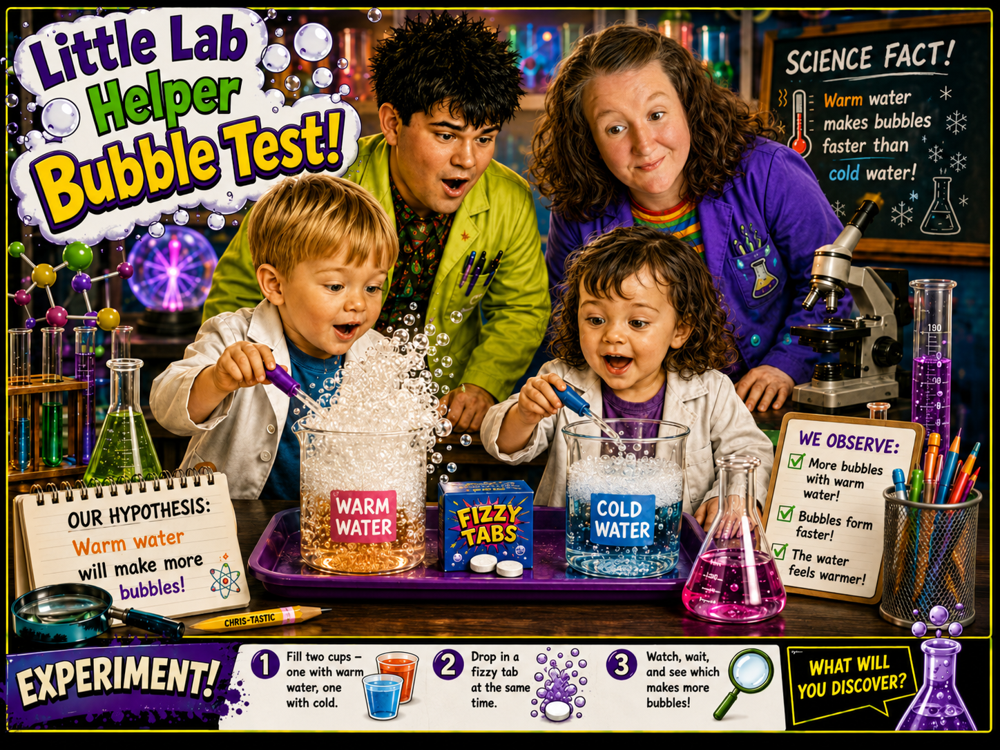
Little Lab Helper Bubble Test
See which water temperature makes fizzy bubbles react faster.
Supplies: 2 clear cups • Warm water • Cold water • Fizz tablet
- Fill one cup with cold water and another with warm water.
- Drop a fizz tablet into each cup at the same time.
- Compare bubble speed and which reaction finishes first.
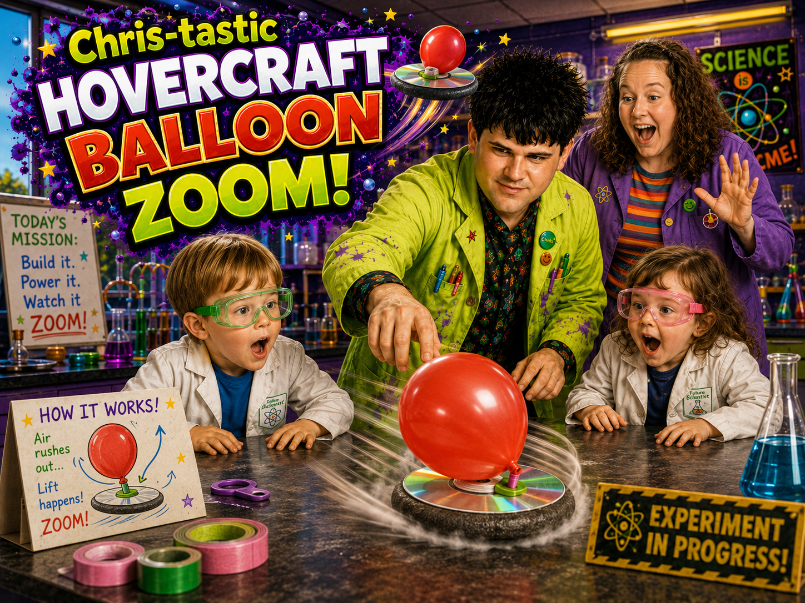
CD Hovercraft Challenge
Build a tiny hovercraft that glides on a cushion of air.
Supplies: Old CD or DVD • Balloon • Bottle cap with pull-up spout • Glue
- Glue a pop-top bottle cap to the center of an old CD.
- Stretch a balloon over the cap, then inflate it through the cap.
- Set the hovercraft on a smooth table, open the cap, and watch it glide.
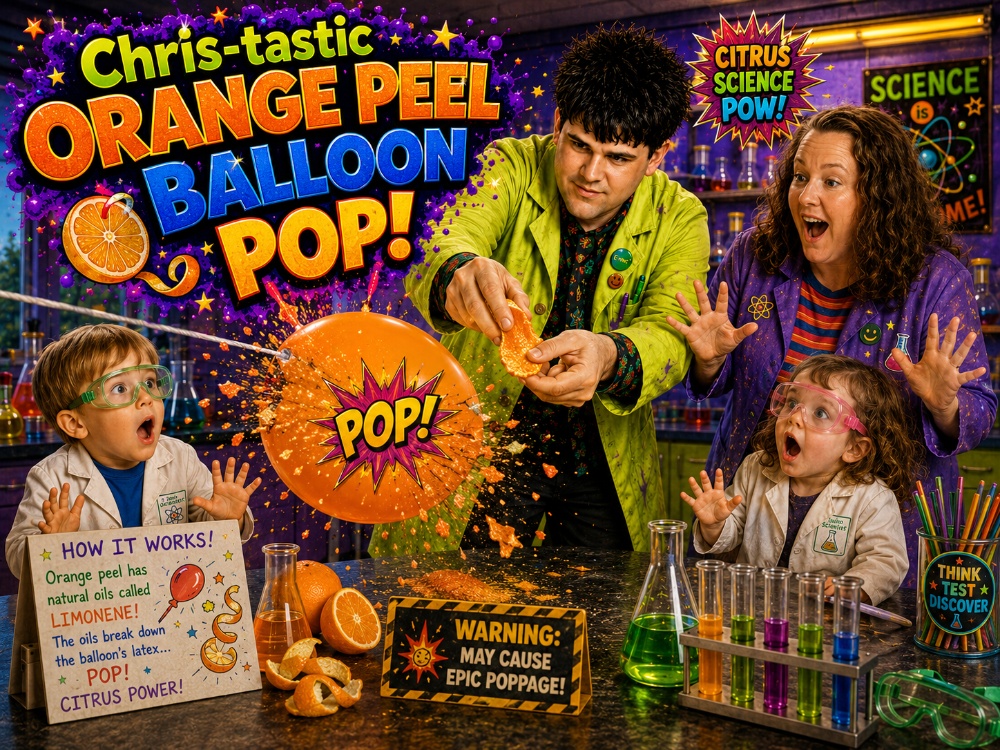
Citrus Fizz Rocket
Combine citrus juice and fizz for a tangy reaction.
Supplies: Lemon or orange juice • Baking soda • Cup or bottle • Tray
- Pour citrus juice into a cup or bottle.
- Add a spoonful of baking soda.
- Watch the fizzy acid-base reaction bubble up.
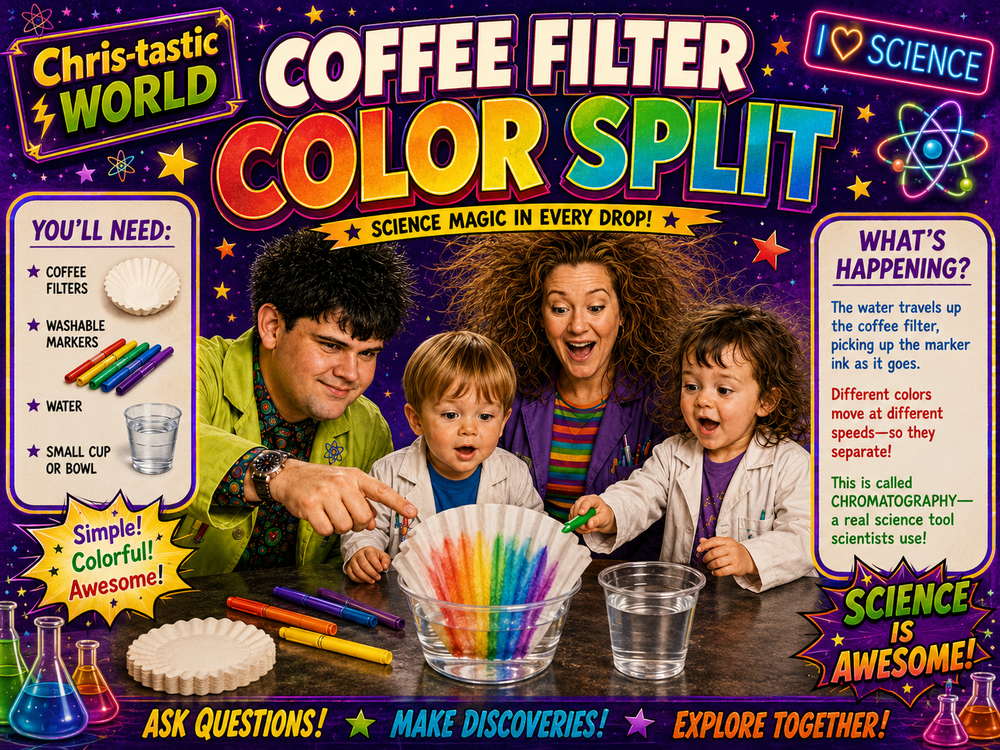
Coffee Filter Color Split
Separate marker colors into a rainbow using a coffee filter and water.
Supplies: Coffee filters • Washable markers • Water • Small cup or bowl
- Draw a thick marker ring on a coffee filter.
- Dip just the center edge in a little water.
- Watch the colors spread and separate outward.
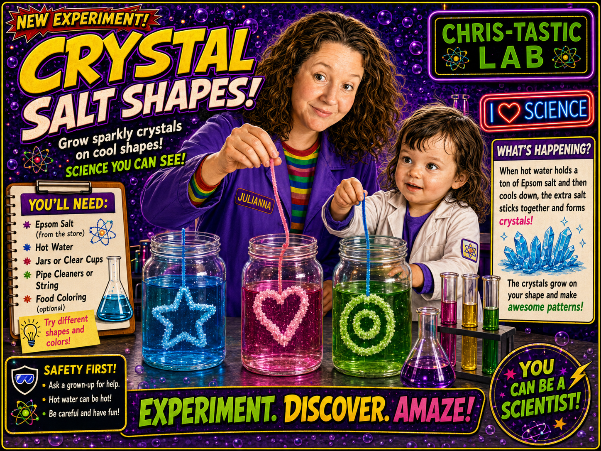
Crystal Salt Shapes
Grow sparkling crystal shapes over time.
Supplies: Salt • Warm water • String or pipe cleaner shape • Jar
- Make a warm salt solution until no more salt dissolves.
- Place a string or shaped pipe cleaner into the jar.
- Wait several days for crystals to grow.
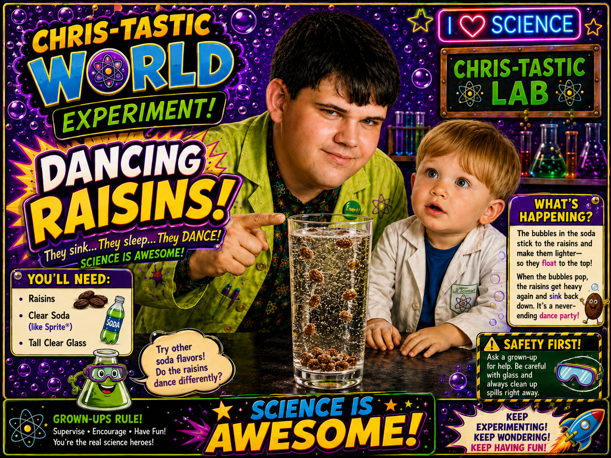
Dancing Raisins
Raisins bounce up and down in fizzy soda as gas bubbles lift and drop them.
Supplies: Clear soda • Raisins • Glass
- Pour clear soda into a glass.
- Drop in a few raisins.
- Watch them rise and fall as bubbles stick and pop.
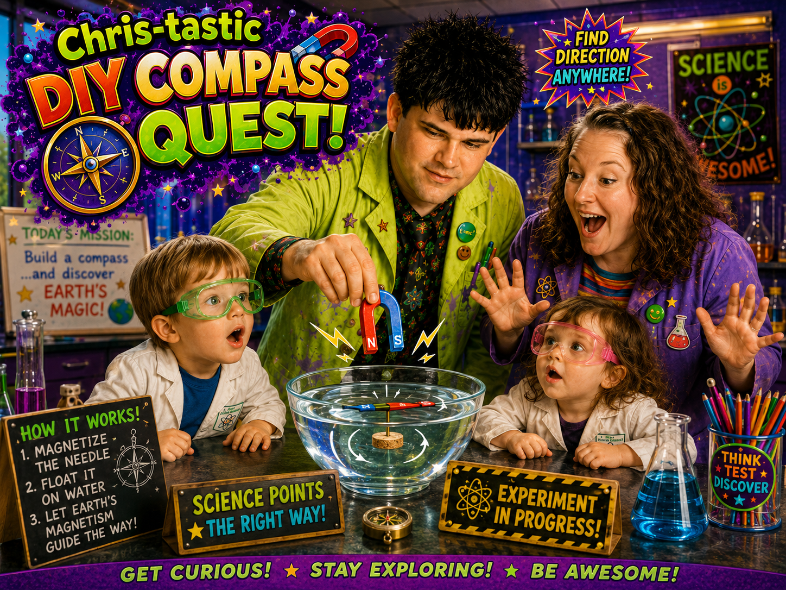
DIY Compass Quest
Magnetize a needle and make your own simple compass.
Supplies: Needle • Magnet • Small piece of cork or foam • Bowl of water
- Rub the needle with a magnet several times in one direction.
- Push it through a tiny piece of cork or foam.
- Float it on water and watch it line up north-south.
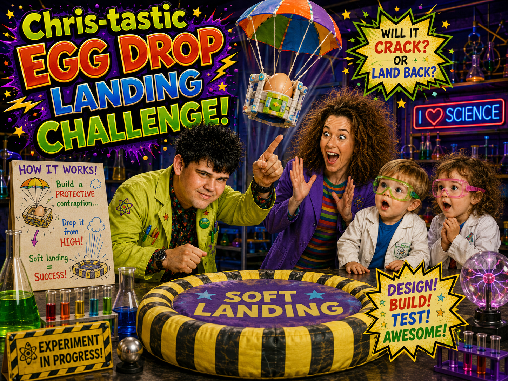
Egg Drop Landing Challenge
Build a soft landing system that protects an egg from a drop.
Supplies: Raw egg • Paper or recycled materials • Tape • Optional parachute materials
- Build a protective container or parachute for the egg.
- Choose a safe drop area and place a soft landing pad below.
- Drop the egg contraption and see if the egg survives.

Egg Float Challenge
Compare fresh water and salt water to see where an egg sinks or floats.
Supplies: 2 eggs • Fresh water • Salt • 2 clear glasses
- Fill two glasses with water.
- Add lots of salt to one glass and stir well.
- Place an egg in each glass and compare what happens.
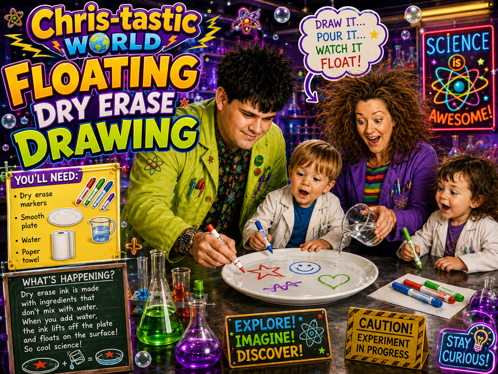
Floating Dry Erase Drawing
Draw simple shapes and watch them float off the plate when water is added.
Supplies: Dry erase markers • Smooth plate • Water
- Draw a simple shape on a smooth plate with a dry erase marker.
- Slowly add water to the plate.
- Watch the drawing lift off and float.
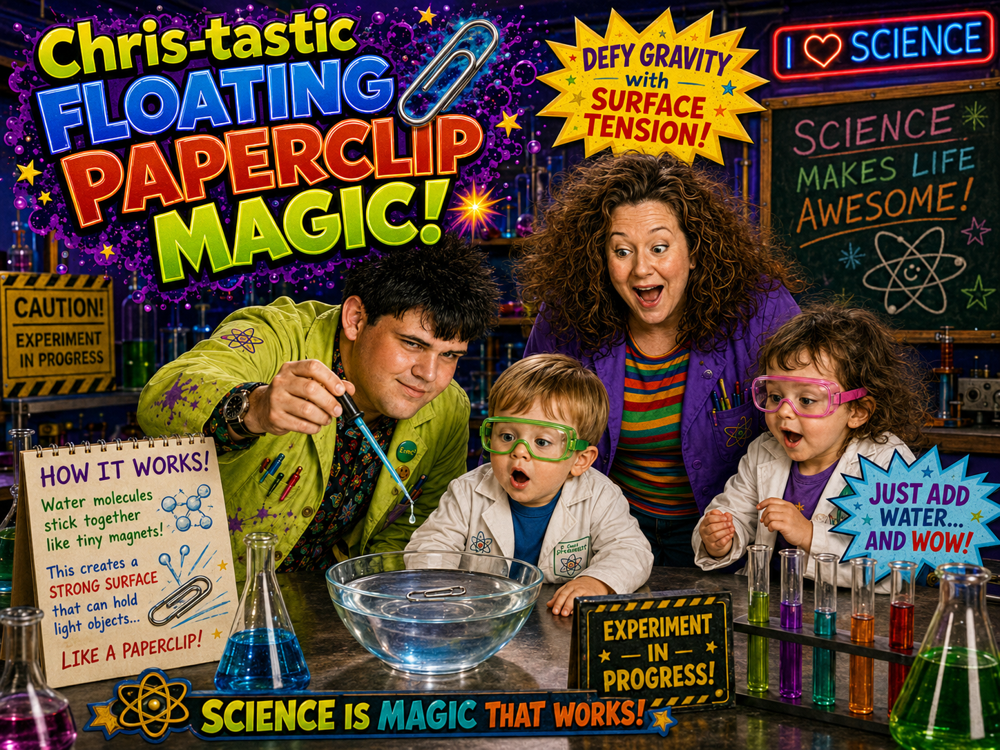
Floating Paperclip Magic
Use surface tension to make a metal paperclip float on water.
Supplies: Paperclip • Bowl of water • Tissue or dropper
- Fill a bowl with water.
- Carefully lower a paperclip onto the surface using tissue or a gentle hand.
- Observe how surface tension helps it float.
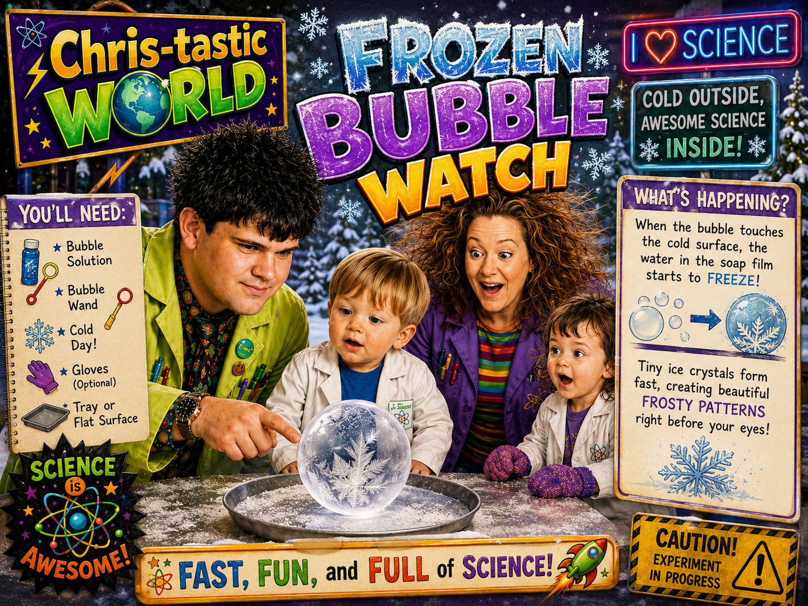
Frozen Bubble Watch
Blow bubbles on a very cold day and watch icy patterns form.
Supplies: Bubble solution • Bubble wand • Cold day
- Go outside on a very cold day.
- Blow bubbles gently onto a flat surface.
- Watch for ice crystals and freezing patterns.
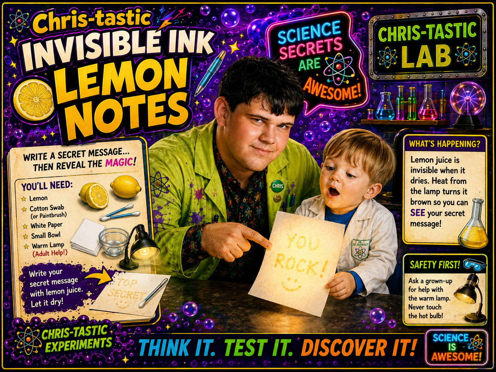
Invisible Ink Lemon Notes
Write a hidden message and reveal it with gentle heat.
Supplies: Lemon juice • Cotton swab • Paper • Adult heat help
- Dip a cotton swab into lemon juice and write a message.
- Let the paper dry completely.
- With adult help, warm the paper to reveal the hidden writing.
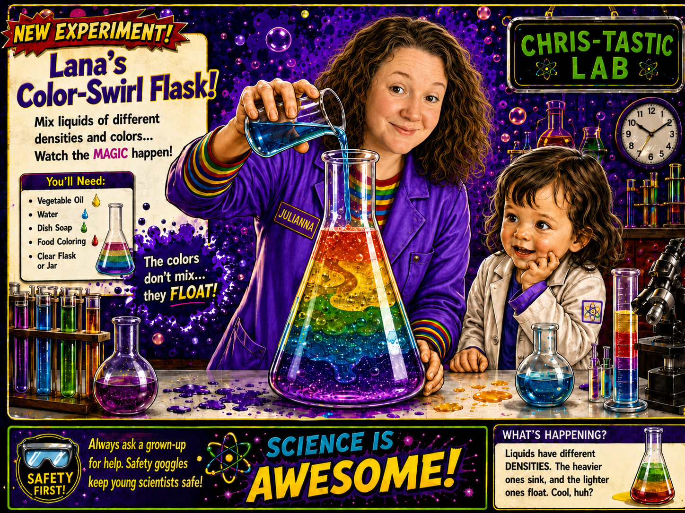
Julianna's Color-Swirl Flask
Mix colorful liquids with different densities and watch bright layers float inside one giant flask.
Supplies: Clear bottle or flask • Water • Food coloring • Cooking oil
- Fill part of a clear flask with colored water.
- Slowly add oil or another liquid with a different density.
- Swirl gently and watch the layers and colors interact.
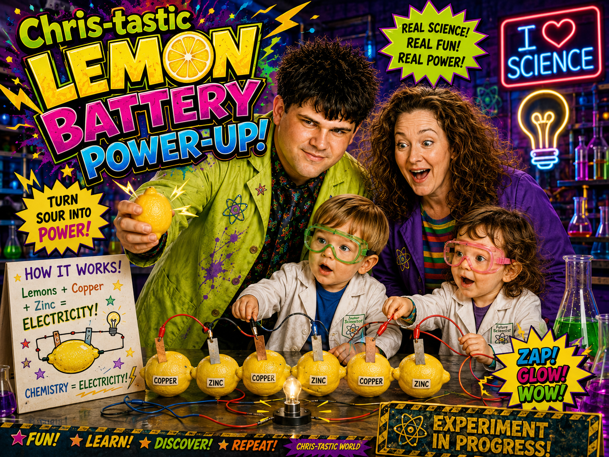
Lemon Battery Power-Up
Use lemons, metal strips, and wires to make a tiny battery.
Supplies: Lemons • Copper strips or pennies • Zinc nails or galvanized nails • Wires and small LED
- Press one copper piece and one zinc piece into each lemon.
- Connect the lemons in a chain with wires.
- Attach the final wires to a small LED and see if it lights.
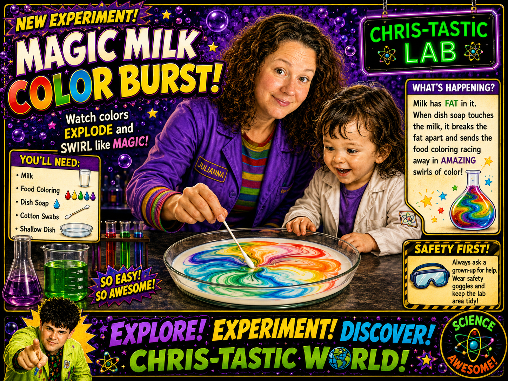
Magic Milk Color Burst
Watch dish soap push food coloring across a milk surface in wild swirls.
Supplies: Milk • Food coloring • Dish soap • Cotton swab
- Pour milk into a shallow dish.
- Add drops of food coloring around the surface.
- Touch the colors with a soap-dipped cotton swab and watch the burst.
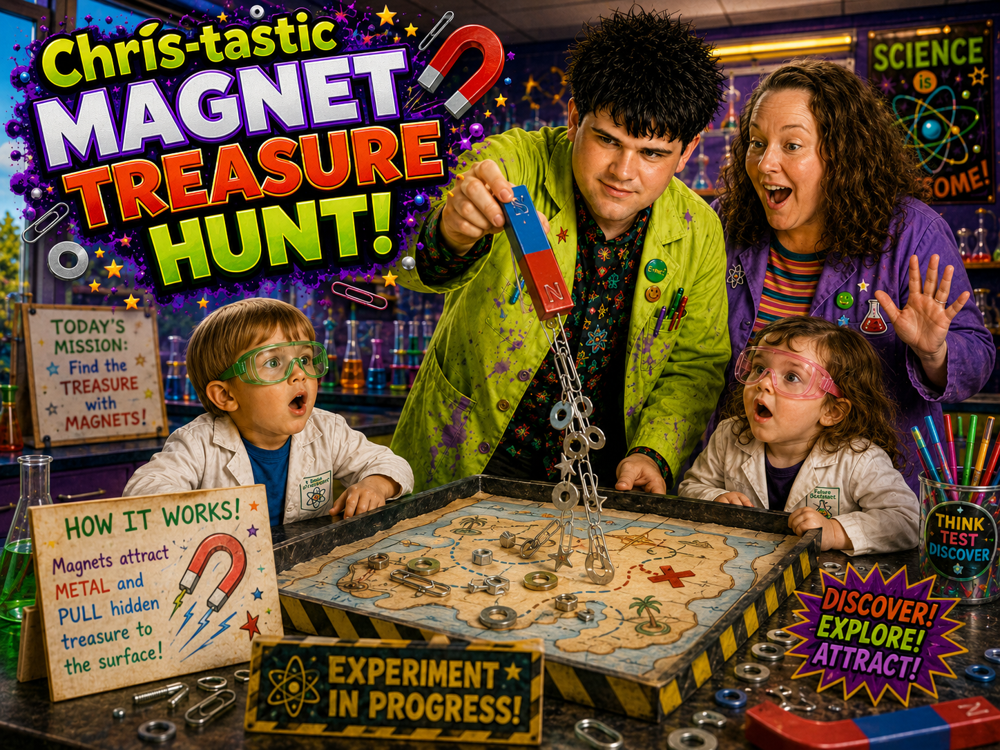
Magnet Treasure Hunt
Search for hidden magnetic treasure and sort what sticks.
Supplies: Magnet wand • Mixed small objects • Tray or bin
- Place different objects in a tray.
- Use a magnet to “hunt” for the items that stick.
- Sort the magnetic and non-magnetic objects into groups.
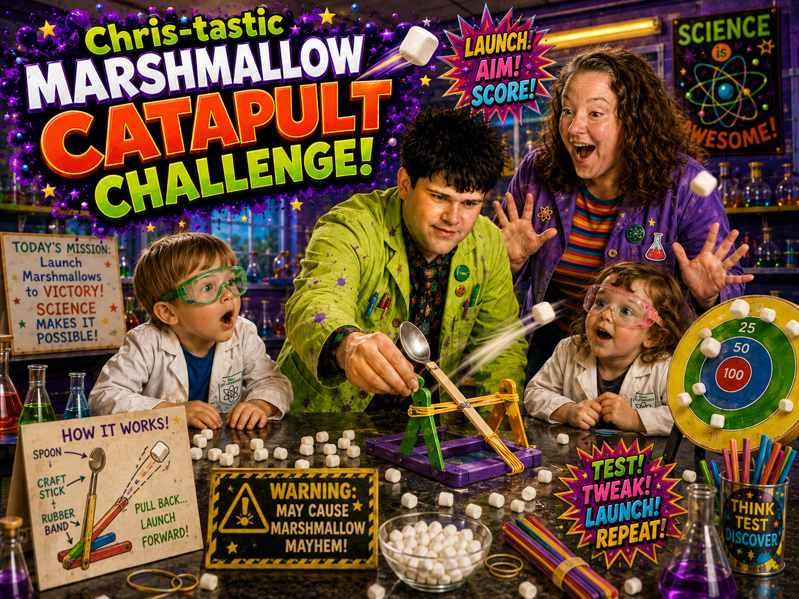
Marshmallow Catapult
Build a simple launcher and test force, angle, and distance.
Supplies: Popsicle sticks • Rubber bands • Plastic spoon • Mini marshmallows
- Stack and rubber-band popsicle sticks into a small catapult base.
- Attach a spoon to the throwing arm.
- Launch mini marshmallows and test which angles go farthest.
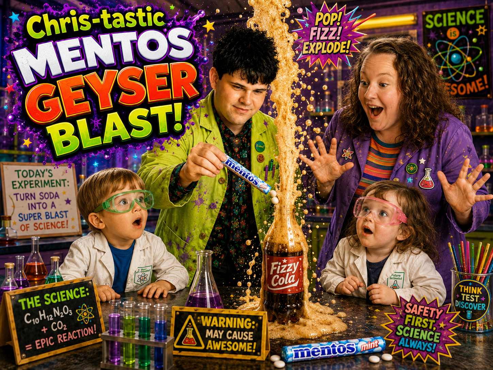
Mentos Geyser Blast
Drop mints into soda and send a fountain skyward.
Supplies: Diet soda bottle • Mentos candies • Outdoor space • Safety goggles
- Take the soda bottle outside and set it on the ground.
- Quickly drop several Mentos into the bottle.
- Step back and watch the fizzy geyser blast upward.
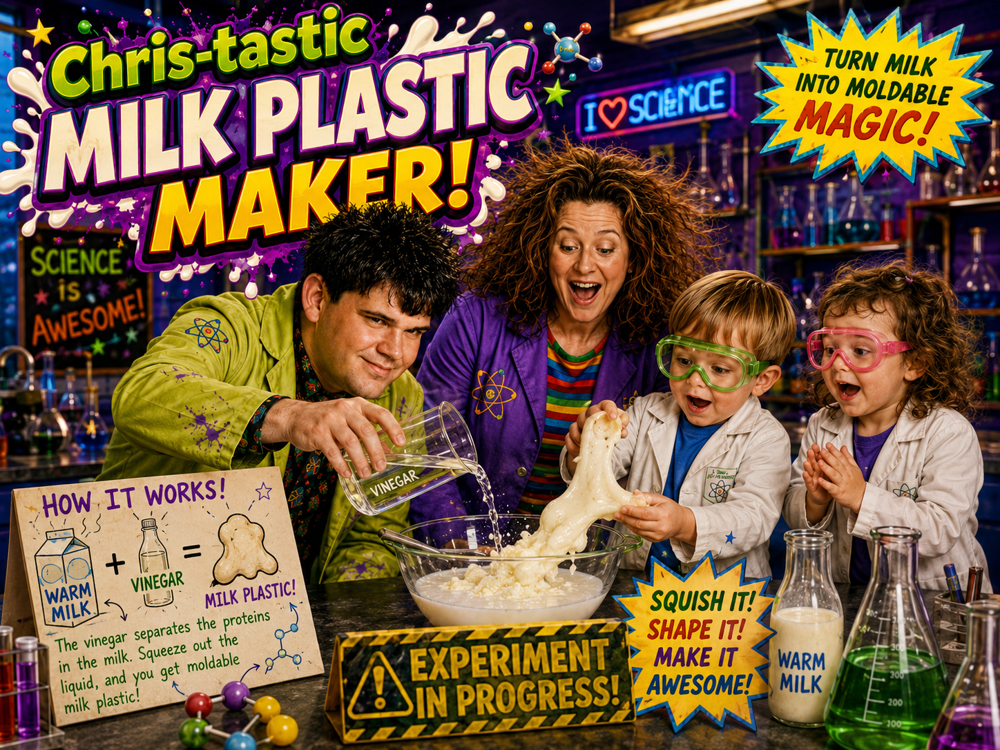
Milk Plastic Maker
Turn milk and vinegar into a moldable solid.
Supplies: Warm milk • Vinegar • Bowl • Strainer or paper towel
- Warm the milk and pour it into a bowl.
- Add vinegar and stir to form curds.
- Strain the curds and shape the milk plastic.
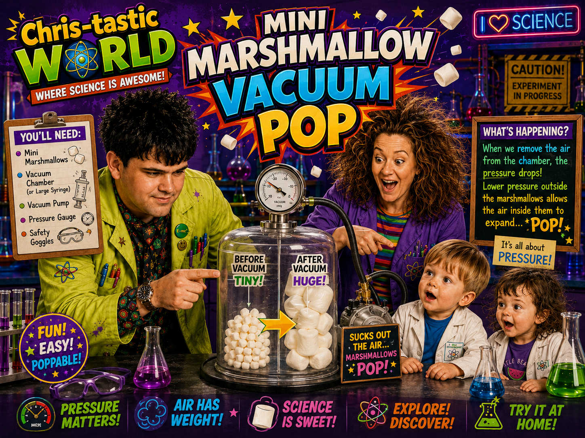
Mini Marshmallow Vacuum Pop
Show how changing pressure can make mini marshmallows puff up dramatically.
Supplies: Mini marshmallows • Large syringe or vacuum chamber • Safety goggles
- Place marshmallows inside a clear syringe or chamber.
- Reduce the air pressure by pulling the plunger or using a pump.
- Watch the marshmallows expand, then shrink again when pressure returns.
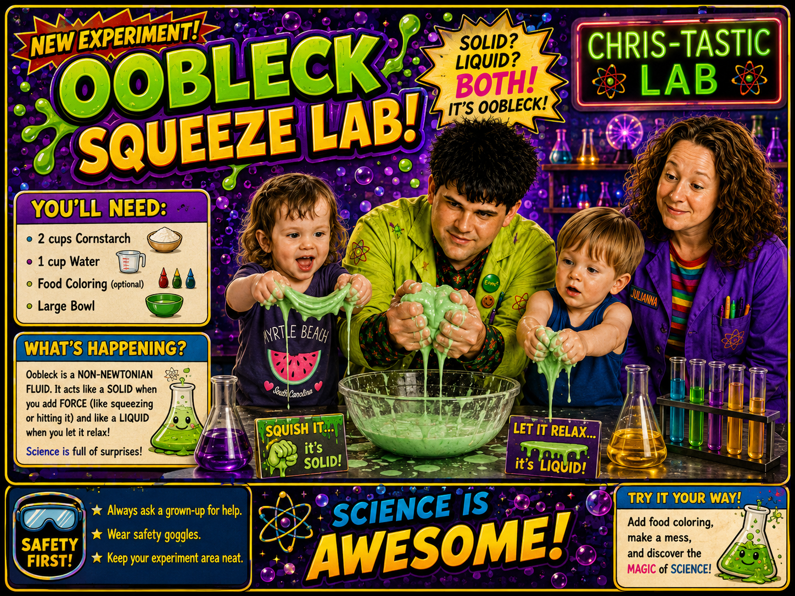
Oobleck Squeeze Lab
Make a goo that feels solid when squeezed but drips when relaxed.
Supplies: Cornstarch • Water • Bowl
- Mix cornstarch with a smaller amount of water in a bowl.
- Stir until it becomes a smooth goo.
- Squeeze it quickly, then let it drip slowly through your fingers.
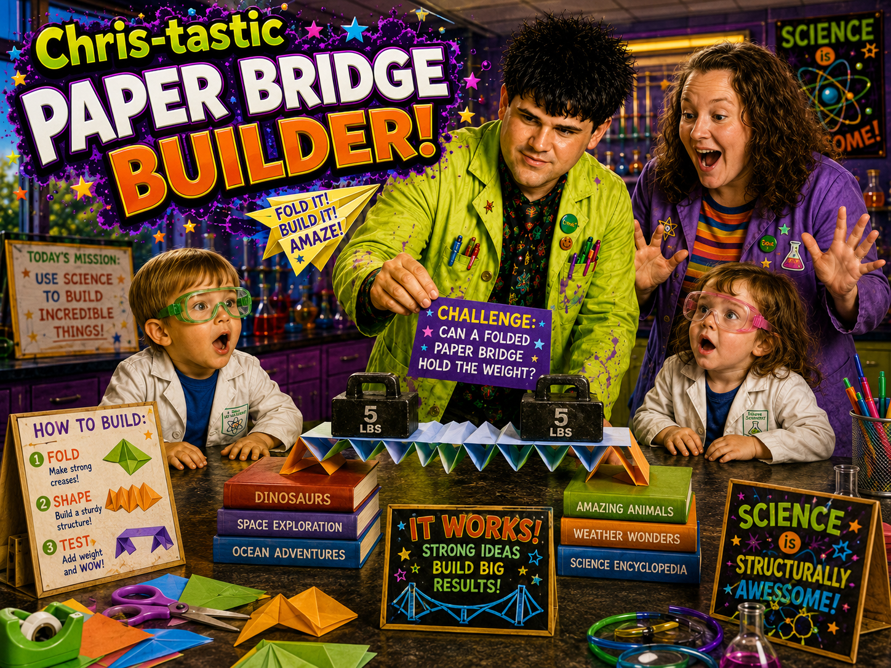
Paper Bridge Challenge
Fold paper in clever ways to build a surprisingly strong bridge.
Supplies: Paper sheets • Small cups or blocks • Coins or small weights
- Span two supports with a flat paper bridge and test its strength.
- Refold the paper into shapes like fans or tubes.
- Compare which bridge design holds the most weight.
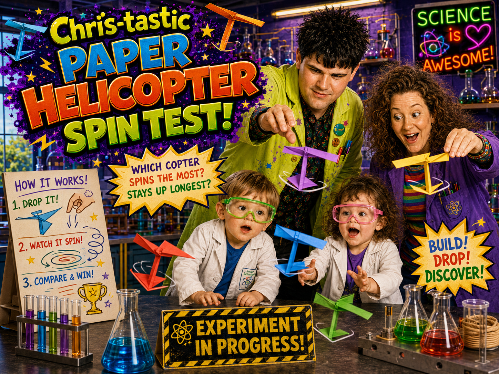
Paper Helicopter Spin Test
Build spinning paper copters and test which design stays up longest.
Supplies: Paper • Scissors • Paper clips
- Cut and fold a simple paper helicopter shape.
- Drop it from a height and watch it spin down.
- Change the size or weight and compare the results.
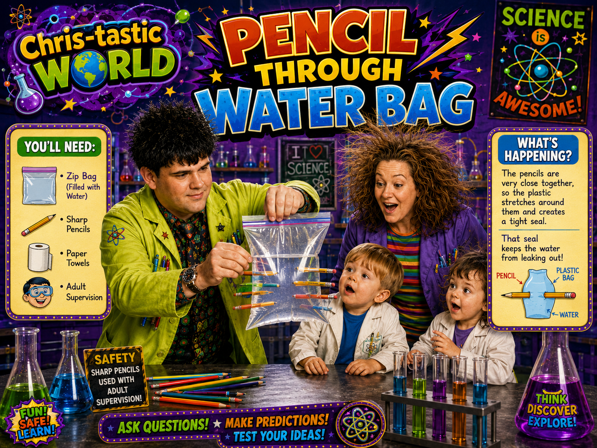
Pencil Through Water Bag
Push pencils through a water-filled bag and discover why it does not leak.
Supplies: Zip bag with water • Sharp pencils • Paper towels • Adult supervision
- Fill a zip bag with water and seal it.
- Hold the bag over a sink or bowl.
- Carefully push pencils straight through the bag and watch for minimal leaking.
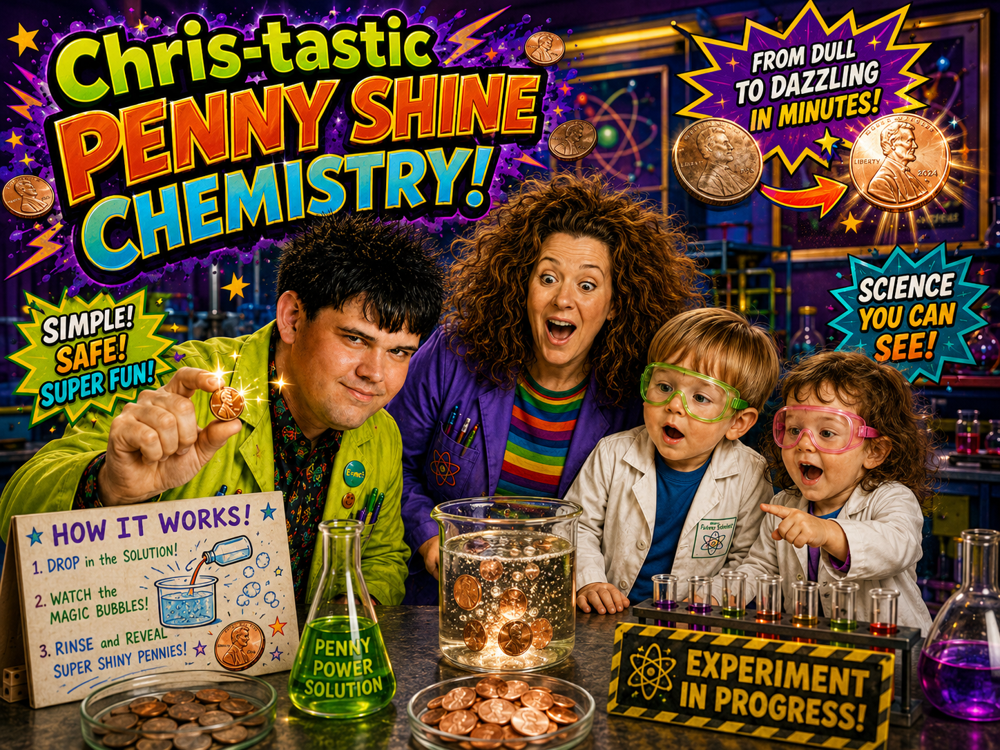
Penny Shine Chemistry
Make dull pennies shine with a simple cleaning reaction.
Supplies: Dirty pennies • Vinegar or lemon juice • Salt • Cup
- Mix a little salt into vinegar or lemon juice.
- Drop the pennies into the solution.
- Rinse them after a few minutes and compare the shine.
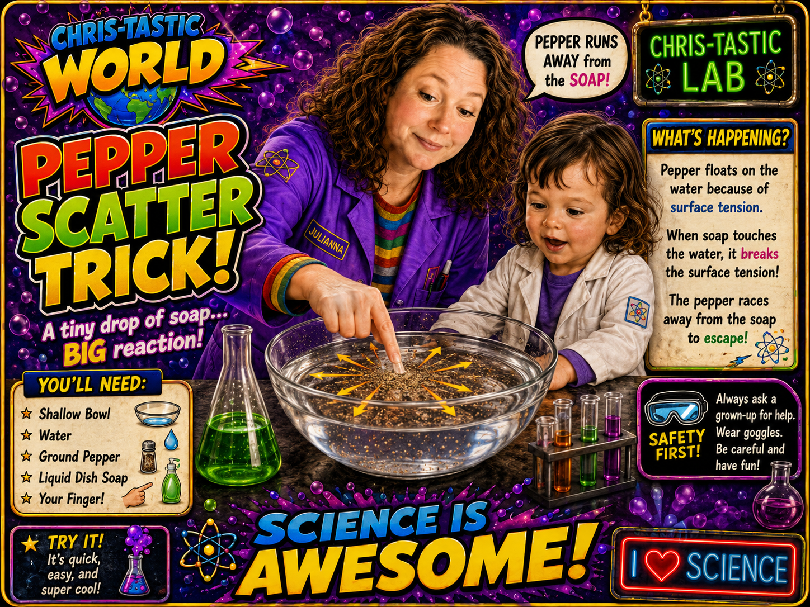
Pepper Scatter Trick
Soap makes floating pepper race away across water like magic.
Supplies: Pepper • Dish soap • Bowl of water
- Sprinkle pepper across the surface of a bowl of water.
- Dip one finger in dish soap.
- Touch the water and watch the pepper scatter away.
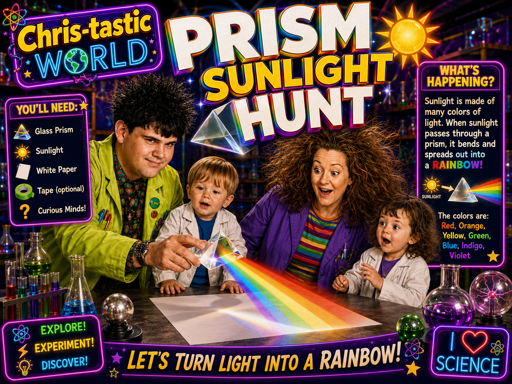
Prism Sunlight Hunt
Use a prism and sunlight to spread white light into a rainbow.
Supplies: Glass prism • Sunlight • White paper
- Hold a prism in a beam of sunlight.
- Aim the rainbow onto a white paper surface.
- Move the prism and compare the color patterns.
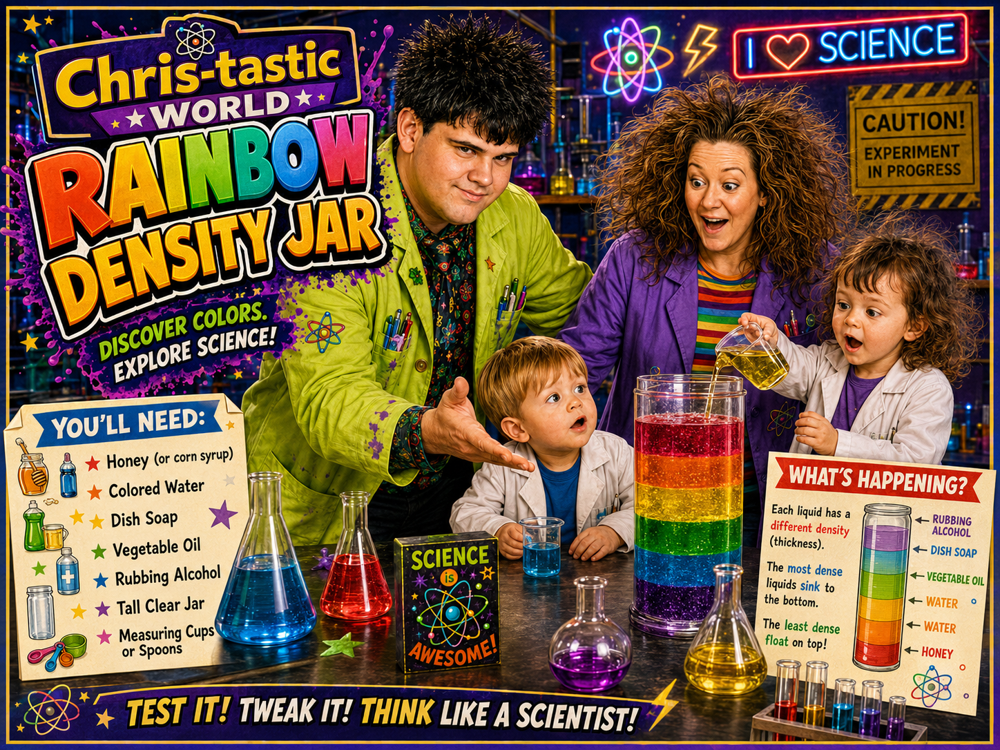
Rainbow Density Jar
Stack different liquids in colorful layers and compare their densities.
Supplies: Honey or corn syrup • Colored water • Dish soap • Vegetable oil
- Pour the heaviest liquid into a clear jar first.
- Slowly add the remaining liquids in density order.
- Observe the colorful layers staying separated.
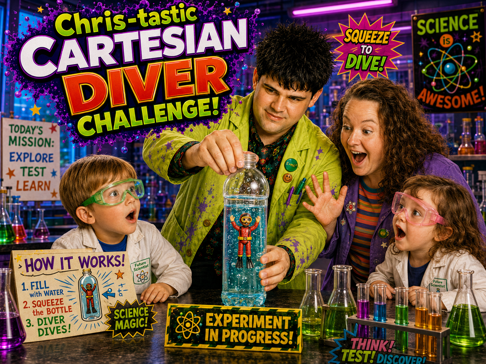
Shadow Sun Clock
Track the Sun by watching how a shadow moves over time.
Supplies: Sunny spot • Stick or pencil • Paper or chalk • Clock
- Stand a stick upright in a sunny spot.
- Mark the tip of its shadow every hour.
- Compare how the shadow moves as the Sun crosses the sky.
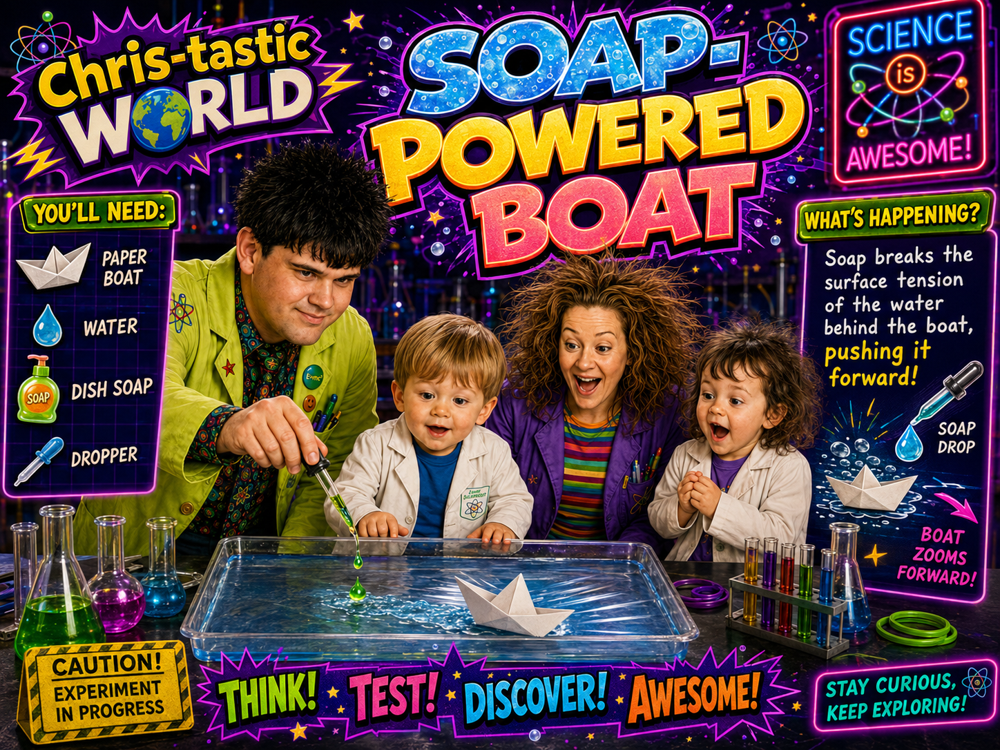
Soap-Powered Boat
Use a drop of soap to make a paper boat race forward across water.
Supplies: Paper boat • Tray of water • Dish soap • Dropper
- Float a small paper boat in a tray of water.
- Place a tiny drop of soap at the back of the boat.
- Watch the boat shoot forward across the water.
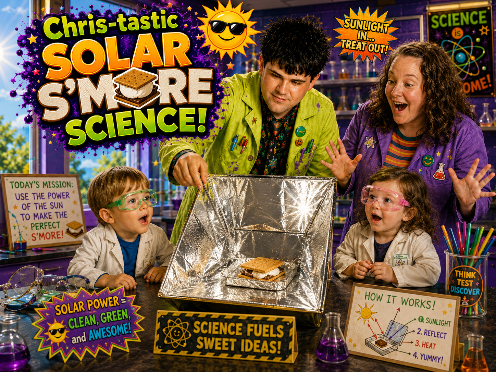
Solar Smores Oven
Use sunlight to warm up a sweet solar treat.
Supplies: Pizza box or foil tray • Aluminum foil • Plastic wrap • Crackers, chocolate, marshmallows
- Line a box or tray with foil to reflect sunlight.
- Place crackers, chocolate, and marshmallows inside and cover with plastic wrap.
- Set it in direct sunlight and wait for the treats to warm and melt.
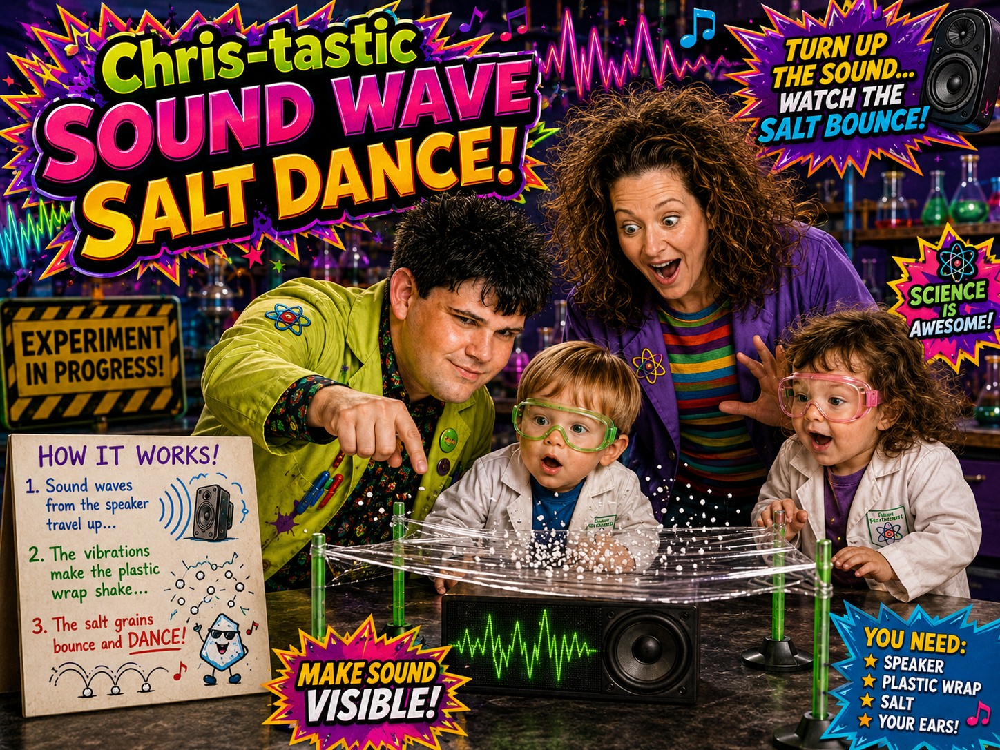
Sound Wave Salt Dance
See sound vibrations by making salt dance on stretched plastic wrap.
Supplies: Speaker • Bowl or box opening • Plastic wrap • Salt
- Stretch plastic wrap tightly over a bowl or container.
- Sprinkle a little salt on top.
- Hold it over a speaker and turn up sound to watch the salt bounce.
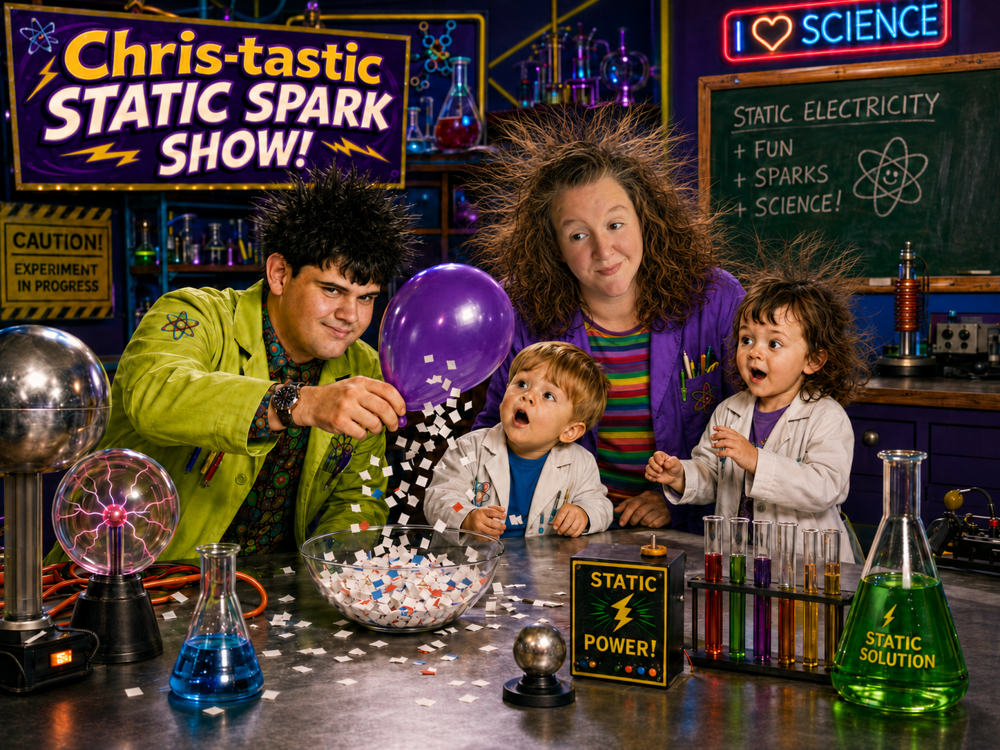
Chris-tastic Static Spark Show
Use a balloon and paper bits to show static electricity in action.
Supplies: Balloon • Small paper bits • Dry hair or fabric
- Blow up a balloon and rub it on hair or fabric.
- Hold it near small paper bits.
- Watch the paper jump and stick because of static electricity.
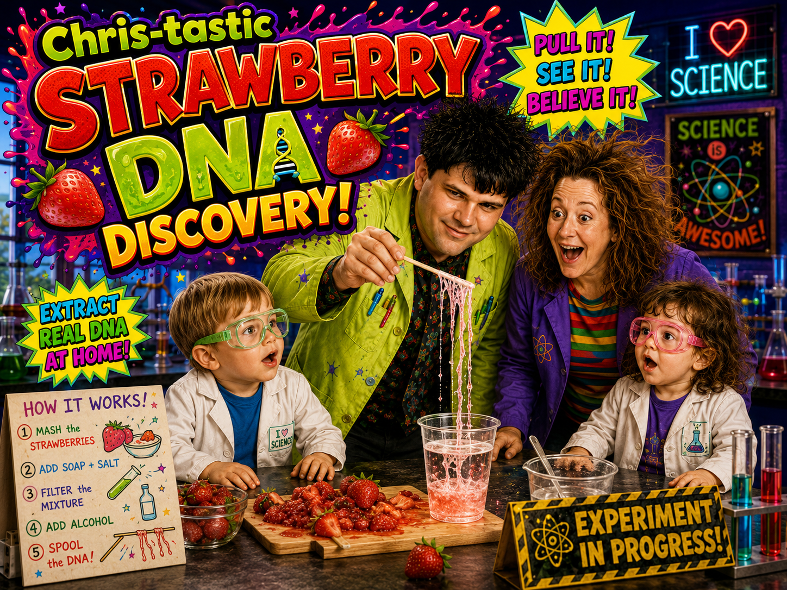
Strawberry DNA Discovery
Mash strawberries and pull out stringy DNA you can see.
Supplies: Strawberries • Zip bag • Dish soap • Salt • Rubbing alcohol • Coffee filter
- Mash strawberries in a bag with a little soap and salt solution.
- Filter the mixture into a clear cup.
- Slowly add cold rubbing alcohol and spool up the DNA strands.
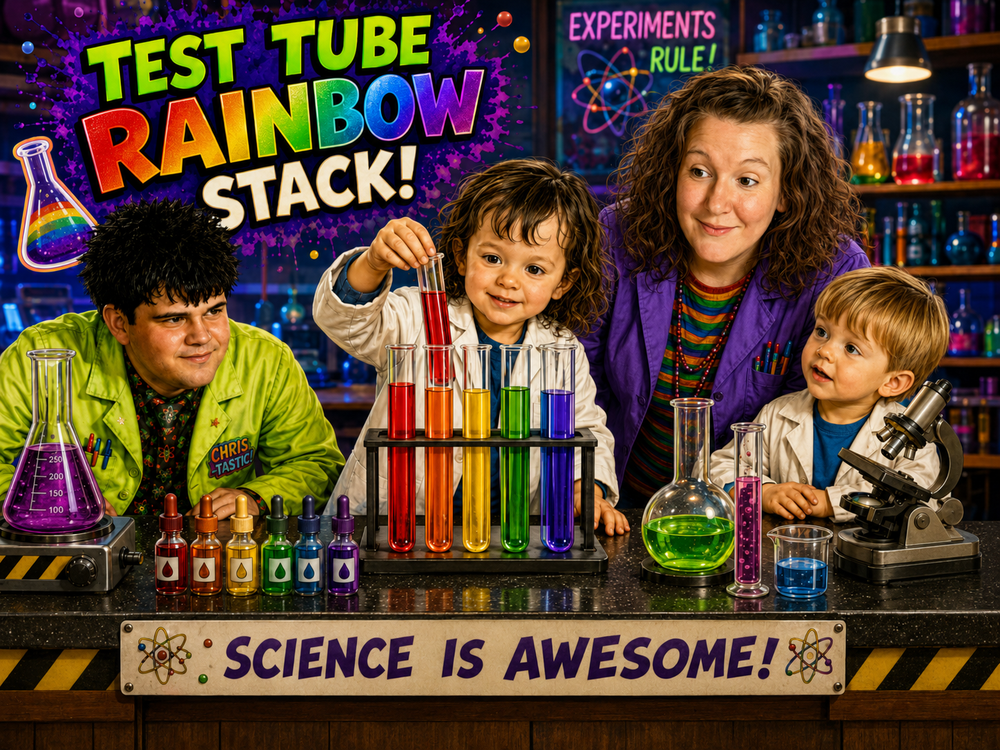
Test Tube Rainbow Stack
Build a bright test tube rainbow and practice careful pouring and color order.
Supplies: Test tubes • Colored water • Rack • Dropper
- Fill several test tubes with different colors of water.
- Arrange them in rainbow order in a rack.
- Compare shades, layers, and mixing ideas.
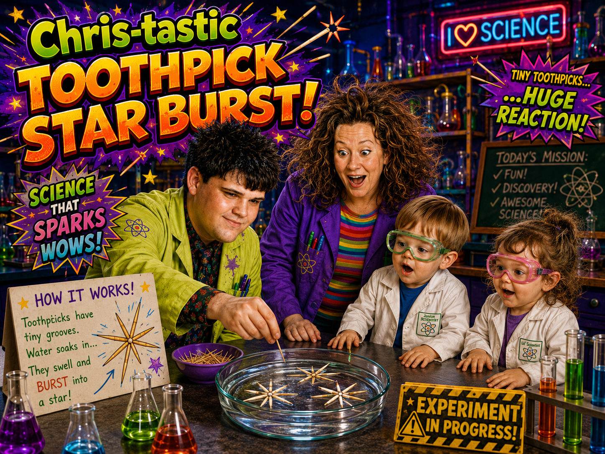
Toothpick Star Burst
Split toothpicks and watch them spring open into star shapes.
Supplies: Toothpicks • Bowl of water
- Break toothpicks almost in half without separating them.
- Arrange them in a star pattern in a bowl.
- Drip water onto the middle and watch them open up.
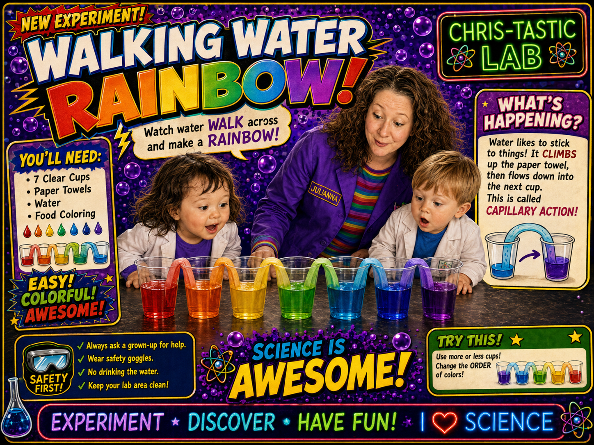
Walking Water Rainbow
Colored water climbs paper towels and travels between cups.
Supplies: Cups • Water • Food coloring • Paper towels
- Place colored water in spaced-out cups.
- Bridge the cups with folded paper towels.
- Watch the colors walk into the empty cups over time.
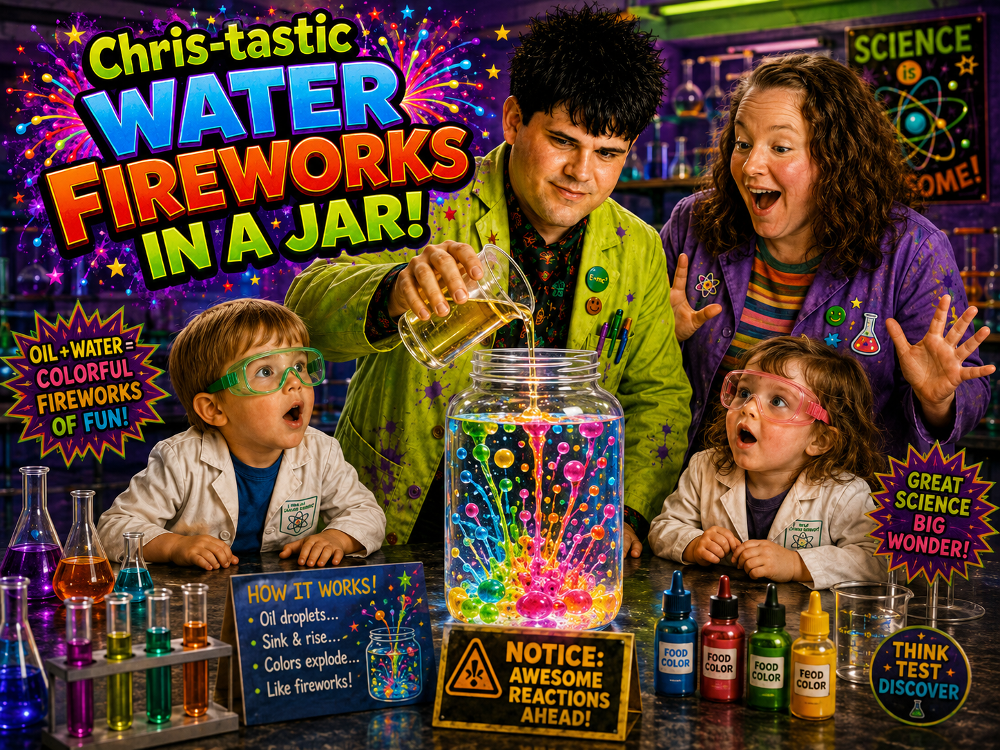
Water Fireworks Jar
Create colorful “fireworks” floating down through water.
Supplies: Clear jar of water • Small cup of oil • Food coloring • Fork
- Fill a clear jar with water.
- In a small cup, mix a little oil with drops of food coloring.
- Pour the mixture into the jar and watch the colors burst downward.
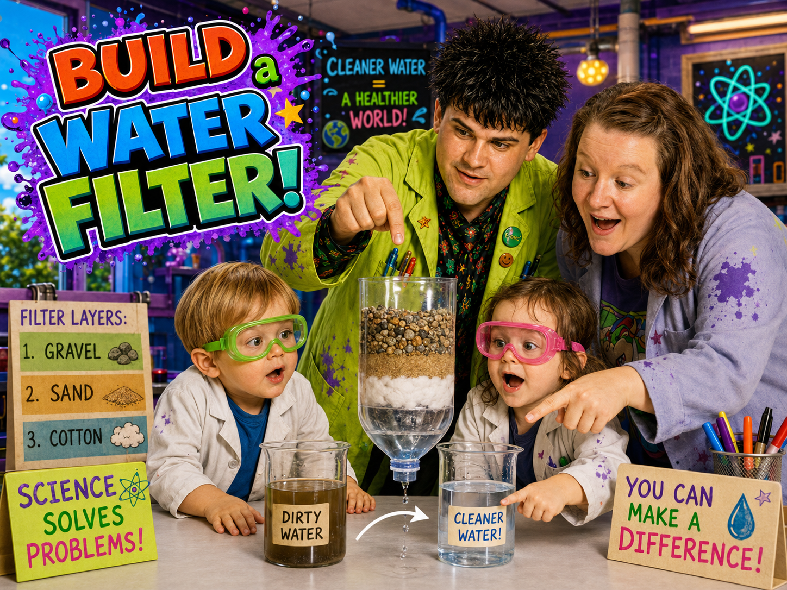
Build a Water Filter
Layer gravel, sand, and cotton to filter dirty water and compare the before-and-after results.
Supplies: Clear plastic bottle • Scissors • Gravel • Sand • Cotton balls or coffee filter • Dirty water
- Cut the bottom off a plastic bottle and turn it upside down like a funnel.
- Layer cotton, sand, and gravel inside the bottle.
- Slowly pour dirty water through the filter into a clean cup and compare the results.
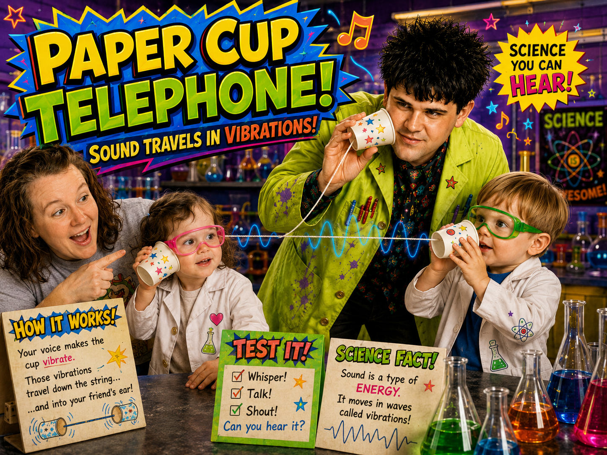
Paper Cup Telephone
Use two paper cups and a string to hear how sound travels in vibrations.
Supplies: 2 paper cups • String • Tape or paper clips • Pencil
- Poke a small hole in the bottom of each cup.
- Thread the string through both cups and secure the ends.
- Pull the string tight while one person talks and the other listens.
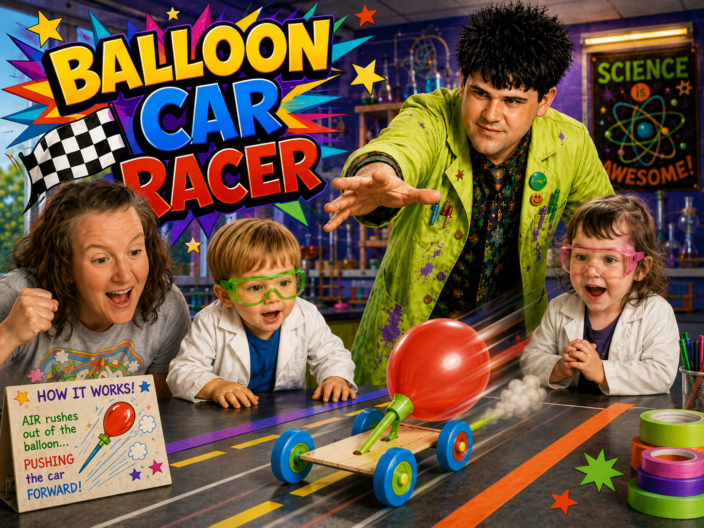
Balloon Car Racer
Build a simple balloon-powered car and race it to see how thrust makes it move.
Supplies: Cardboard or lightweight base • 4 wheels • 2 straws • Skewers or axles • Balloon • Tape
- Build a small rolling car using the base, wheels, and axles.
- Tape a straw and balloon to the top of the car.
- Inflate the balloon through the straw, let go, and race the car forward.
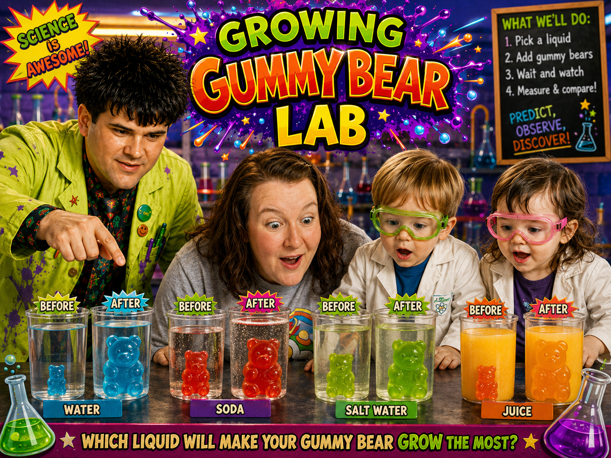
Growing Gummy Bear Lab
Soak gummy bears in different liquids and compare how much they grow or change.
Supplies: Gummy bears • Water • Salt water • Juice or soda • Clear cups
- Place one gummy bear in each cup.
- Fill the cups with different liquids.
- Wait several hours or overnight, then compare the sizes and textures.
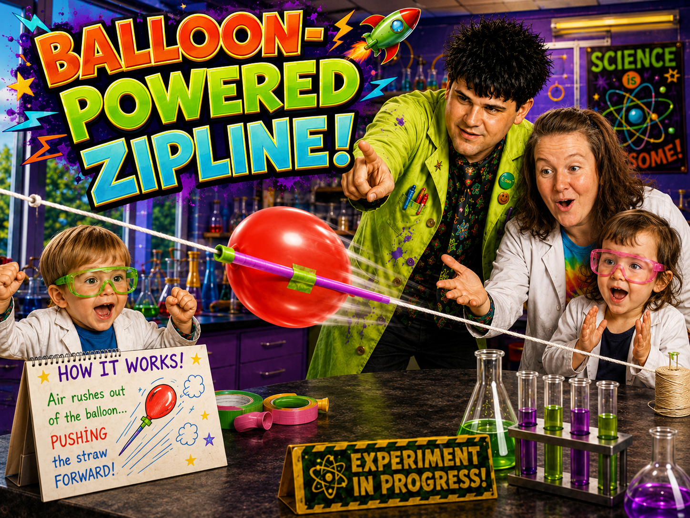
Balloon-Powered Zipline
Send a balloon zooming down a string zipline to explore thrust and motion.
Supplies: Balloon • Long string • Straw • Tape • 2 anchor points
- Thread a straw onto a long piece of string and pull the string tight.
- Tape an inflated balloon to the straw without tying the balloon closed.
- Let go and watch the balloon zip along the line.
Magnetic Slime Lab
Make slime that stretches and moves when a magnet gets close.
Supplies: White school glue • Liquid starch or slime activator • Black iron oxide powder or iron filings • Food coloring optional • Strong magnet
- Mix glue with a little iron oxide powder until it is evenly blended.
- Add slime activator and stir until the slime forms.
- Move a strong magnet near the slime and watch it stretch and rise.
Ramp Race Gravity Test
Race toy cars down ramps at different heights and compare how gravity affects speed.
Supplies: Toy cars • Ramp pieces or boards • Books or boxes for height • Stopwatch
- Set up ramps at different heights.
- Release the cars from the same starting point.
- Time each run and compare which ramp makes the car go fastest.
Rock Candy Crystal Grower
Grow sparkling sugar crystals on a stick and watch crystals form over time.
Supplies: Sugar • Water • Saucepan • Jar • Wooden skewer or stick • Clothespin
- With adult help, heat water and dissolve lots of sugar to make a supersaturated solution.
- Pour the solution into a jar and place the skewer inside without touching the sides.
- Let the jar sit for several days and watch crystals grow on the stick.
Color Mixing Ice Cubes
Freeze colored ice cubes and melt them together to watch new colors appear.
Supplies: Ice cube tray • Water • Food coloring • Bowls or trays
- Make red, yellow, and blue ice cubes and freeze them.
- Place different colors together in a bowl or tray.
- Watch the cubes melt and see which new colors appear as they mix.
Cup Tower Engineering Challenge
Build the tallest tower you can using only paper cups and index cards.
Supplies: Paper cups • Index cards • Flat table
- Set out a stack of cups and index cards.
- Take turns stacking cups and laying cards to build upward.
- Test how tall your tower can go before it falls.